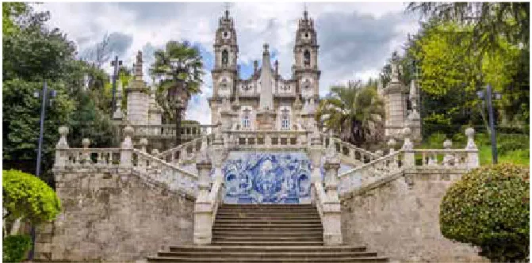
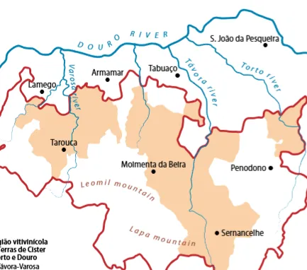

Chapter 4 · The Portuguese wine regions
Távora-Varosa Wine Region
Key figures (2022)
Viticultural area: 2,274 ha
Total Production: 4,786,900 litres
History
The region bears vestiges of human habitation since prehistoric times. Vine cultivation started during the Roman occupation and developed significantly in the 12th century. Wine production in this region goes back to 1678, when the monks of Cister started to produce it. It was the place where the Cistercian monks chose to build some of the most beautiful examples of Cistercian architecture, such as the Monastery of São João de Tarouca which was the first of its kind on the Iberian Peninsula, constructed in the seventh century. However, the region gained importance with the production of sparkling wine. In 1919, Aquilino Ribeiro coined the term “Terras do Demo” (Lands of the Demon), with the writer’s intention of describing life and the difficulties of subsisting in a territory in the deep interior of Portugal. In 1989, it became the first national wine-growing region to be demarcated for the production of DOC sparkling wine. The current denomination is not a new one but was created in 1999, and makes reference to the rivers Távora and Varosa, two tributaries of the Douro, and constitutes one of the first DOs specifically for sparkling wines in Portugal. It is the first DOC designated specially for sparkling wines in Portugal. The Comissão Vitivinícola Regional Távora Varosa – CVRTV (Távora Varosa Regional Vitivinicultural Commission) is the

Lamego
authority for DO and IG products of this region.
Terroir
Climate Köppen-Geiger classification:
Csa sub-humid temperate climate with dry summer season. The climate of this wine-growing region is divided in two orographic and edaphic regions.
MCC System indices (Tonietto & Carbonneau, 2004):
Tarouca area: heliothermal index (HI): +1, cool night index (FI): -1, dryness index (DI) +2 and
Moimento da Beira: heliothermic index (HI): +2, cool night index (FI): +1, dryness index (DI): +1. There is a high risk of frost in early spring, and high humidity with risk of infection with cryptogamic diseases. The growing season is around eight months, between March and November. The climate is characterized by hot, dry summers and harsh, wet winters. The maximum temperature in summer can be over 30 °C and the temperature range during the months when the grapes are ripening can reach 20 °C. The characteristics of the Távora-Varosa terroir make for fresh wines with high acidity, ideal for sparkling wines. Average annual rainfall 700 mm and is unevenly distributed throughout the year, concentrated mainly in the autumn–winter period.
Geology and soil science: The Távora- Varosa region is located in the foothills of the Serra da Nave. The Terras de Cister IG and the Távora Varosa regions act as buffers between the Douro and Terras do Dão regions have unique soil conditions, with mostly granitic soils, poor in limestone, sometimes schist and acid, with marked erosion, having a low capacity to retain water. As in the Douro, the climatic conditions in this region are unique, as are the soils, which are mostly granite, but with little limestone, although they are sometimes schistose with significant acid erosion. This land of smallholdings lies on a mountainous plateau and has cold wet winters and hot dry summers. It is one of the zones which lends itself to the creation of exceptional characteristics in sparkling wines
Vineyard elevation: Around 550 metres.
Types of wine produced
Terras de Cister IG wine, or Terras de
Cister Regional Wine: White, red, rosé, sparkling, quality sparkling, and red, white and rosé aromatic sparkling
Távora-Varosa DO wine: Red, white, rosé and sparkling Távora-Varosa DO sparkling wine (VEQPRD): Red, white, rosé
Regional contacts
Technical information: IVDP, I.P. – Instituto dos Vinhos do Douro e do Porto, I.P. (Douro and Port Wine

Região vitivinícola DOP Porto e Douro
DO Távora-Varosa
Institute) (Head Office) Rua dos Camilos, 90, 5050-272 PESO DA RÉGUA Tel.: 254 320 130,
Fax: 254 320 149
Website: www.ivdp.pt, e-mail: ivdp@ivdp.pt
Intermediate certification authority:
The Instituto dos Vinhos do Douro e do Porto, I.P. – IVDP (Douro and Port Wine Institute, (Head Office) Rua dos Camilos, 90, 5050-272 PESO DA RÉGUA – Tel.: 254 320 130,
Website: www.ivdp.pt, e-mail: ivdp@ivdp.pt Comissão Vitivinícola Regional de Távora-Varosa (Távora-Varosa Regional Vitivinicultural Commission) Casa do Paço – Dalvares; 3610-013 TAROUCA Tel.: 254 679 000/254 679 001, e-mail: geral@cvrtavora-varosa.pt
Enotourism information:
Terras do Cister Wine Route (Viniportugal); www.viniportugal.pt Terras d. C. Câmara de Moimenta da Beira website: www.if-moimentadabeira.pt; www.douronet.pt; DOP sparkling wine production denomination for Távora-Varosa, (bottle fermentation): a) “Cuvée” or “Cuvée Especial” b) “Millésime” c) “Assemblage” d) “Grande Cuvée or (Grand Cuvée)” DOP sparkling wines must indicate the year of harvest.
Botany (biodiversity features) and authorised varieties
Legal basis: Ministerial Order n.º 151/2012 of 18 May and Decree-Law n.º 212/2004 of 23 August
Red wines: Água Santa, Alfrocheiro, Alicante Bouschet, Alvarelhão, Amaral, Aragonez (Tinta Roriz) Baga, Bastardo, Cabernet Franc, Cabernet Sauvignon, Camarate, Campanário, Castelão, Cidreiro, Coração de Galo, Cornifesto, Grand Noir, Jaen, Malvasia Preta, Marufo, Merlot, Monvedro, Moreto, Pilongo, Pinot Noir, Português Azul, Rabo de Ovelha Tinto, Rufete, Sousão, Syrah, Tinta Barroca, Tinta Carvalha, Tinta Francisca, Tintem, Tinto Cão, Touriga Fêmea, Touriga Franca, Touriga Nacional, Trincadeira (Tinta Amarela), Vinhão, Alvar Roxo, Folgasão Roxo, Gewürztraminer, Malvasia Preta Roxa and Pinot Gris. Alvar,

White wines: Alicante Branco, Alvarinho, Arinto (Pedernã), Arinto do Interior, Assaraky, Azal, Barcelo, Bical, Cercial, Chardonnay, Códega do Larinho, Dona Branca, Encruzado, Fernão Pires (Maria Gomes), Folgasão, Folha de Figueira, Fonte Cal, Gouveio, Jampal, Loureiro, Luzidio, Malvasia Fina, Malvasia Rei, Pinot Blanc, Rabo de Ovelha, Riesling, Sauvignon, Semillon, Sercial (Esgana-Cão), Sercialinho, Síria (Roupeiro), Tália, Tamarez, Terrantez, Uva Cão, Verdelho, Verdial Branco, Viosinho and Vital.
Prestigious wineries
in the region: Cooperativa Agrícola de Távora
(Terra do Demos) receives 7 million kilograms of grapes per year from 1,800 hectares of vineyards, cultivated by its 1,500 members.
Paço de Cister – Sociedade Agrícola e Turismo, Lda.
Carlos Alberto Soares Caixas – Quinta dos Romilões Casa de Vinhago, Lda
Casa dos Viscondes da Várzea II, Empresa Agrícola, Lda
Casa Santo António Britiande – Quinta Santo António Luís Leocádio – Vinhos, Unipessoal
Lda. – Quinta da Seara Quinta da Moita
Quinta das Cepas – Viticultura de Produção, Lda Sociedade Agrícola e Comercial do
Varosa, SA Wine Attitude, Lda. – Adega